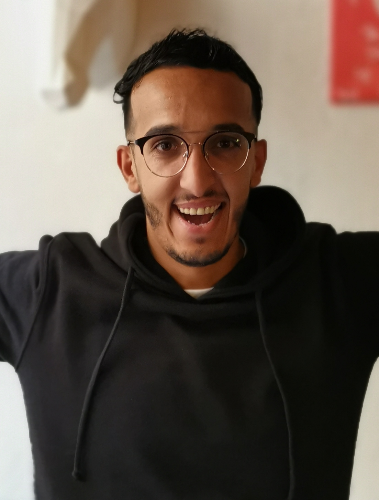
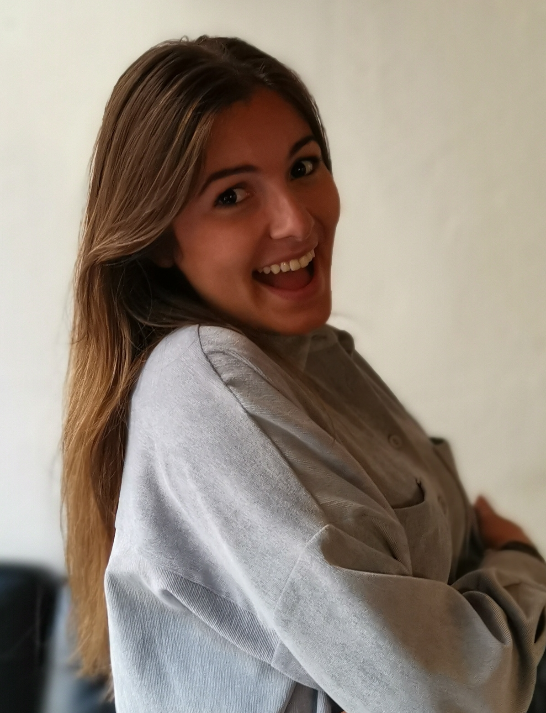
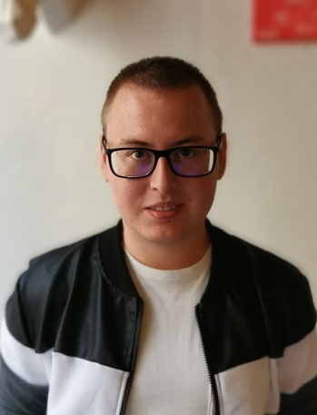

Salut, moi c'est Ouahid, rien de mieux que de s'évader
vers de nouvelles contrées ! La Chine, les Etats-Unis, L'Indonésie
tant de beaux pays qui me donne d'avantage envie de decouvrire d'autres
parties du globe ! J'aime les voyages, les voyages et encore les voyages !
Venez decouvrir avec nous, les Wild-trotteurs notre vision de la vie !

Hey! Je m'appelle Solène et même avant de naître j'aimais voyager
(et oui, 9 mois dans le ventre de maman durant un gros voyage à New York!).
J'ai visité les États-Unis, le Canada, la Grèce, l'Espagne, l'Italie, le Maroc, la Tunisie, Punta Cana, Tel Aviv....
et d'autres. J'adore la mode et le tennis, ainsi que les sorties entre copines, notre blog représente
notre passion et la manière dont nous interprétons le goût du voyage!

Et moi c'est Florian, bonjour ! Passioné par les cultures des autres pays,
ainsi que leurs traditions, j'aime voyager dès que possible afin de découvrir de nouveaux lieux.
L'Angleterre, l'Espagne, le Portugal, l'Italie, la Tunisie, la Turquie font parties de mes récents voyages.
Découvrez sur ce site une liste de nos voyages, de nos destination de rêve et plus !